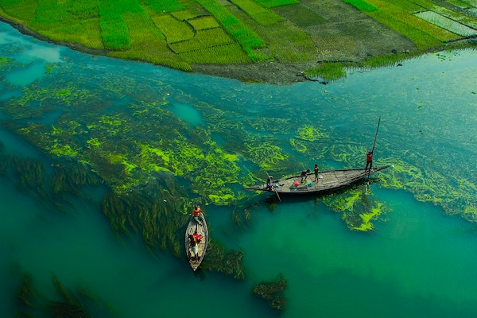
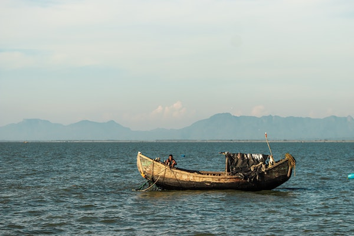

During the Bangladesh Liberation War, Bengali nationalists declared independence and formed the Mukti Bahini (the Bangladeshi National Liberation Army). The Provisional Government of Bangladesh was established on 17 April 1971, converting the 469 elected members of the Pakistani national assembly and East Pakistani provincial assembly into the Constituent Assembly of Bangladesh. The provisional government issued a proclamation that became the country's interim
  Facebook Twitter InstagramBangladesh, to the east of India on the Bay of Bengal, is a South Asian country marked by lush greenery and many waterways. Its Padma (Ganges), Meghna and Jamuna rivers create fertile plains, and travel by boat is common. On the southern coast, the Sundarbans, an enormous mangrove forest shared with Eastern India, is home to the royal Bengal tiger.
Dhaka is Bangladesh's capital and largest city and is overseen by two city corporations who manage between them the northern and southern part of the city. There are 12 city corporations which hold mayoral elections: Dhaka South, Dhaka North, Chittagong, Comilla, Khulna, Mymensingh, Sylhet, Rajshahi, Barisal, Rangpur, Gazipur and Narayanganj. Mayors are elected for five-year terms. Altogether there are 506 urban centres in Bangladesh among which 43 cities have a population of more than 100,000.
Written By-TANIA KARIM RUKU
Rajshahi,Bangladesh